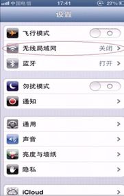
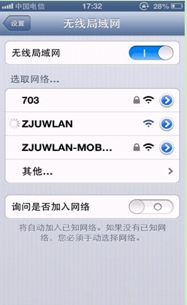
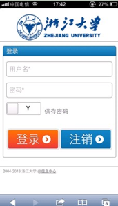

2013年初，全校范围内基本实现了无线网络覆盖，大大方便了同学们的上网需求。
打开无线网卡，找到 SSID 为ZJUWLAN的 WiFi 网络；
请确认已正确安装无线网卡驱动，并已打开无线网卡开关。选择SSID为ZJUWLAN的无线网络，并双击进行连接，无线网卡的地址设为自动获取。
登录浙江大学无线网络；
打开浏览器输入任意网址，即可进入认证页面，无线网帐号无需另行申请（用户名和密码即为校网
VPN用户名密码）。
注意：部分浏览器由于安全设置问题会导致认证页面无法正常弹出，这时将浏览器跳转地址https://中的字母s删掉后回车，即可正常显示认证页面
温馨提示：
使用电脑上网时，不可同时连接有线网络和无线网络，若插网线使用有线网络，请将无线网络断开；若使用无线网络，请将网线拔出，否则可能造成拨号错误。
点击设置图标进入设置，打开无线局域网（WiFi），iPhone开始自动搜索周围WIFI网络；

选择ZJUWLAN后，点击浏览器，打开任意网页，会出现无线网络认证界面，提示您输入用户名和密码。登录成功后即可上网。
 